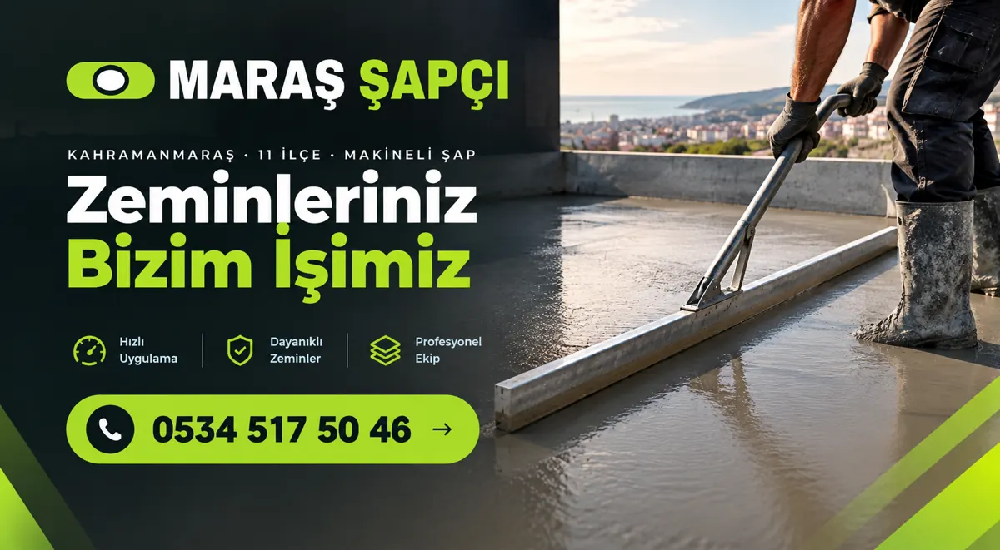

Maraş Şap Fiyatları (Ekim 2026)
Kahramanmaraş'ta şap fiyatını metrekare üzerinden veriyoruz. Aşağıda iki fiyatımızı, metrekareye göre hesap aracını ve fiyatı neyin değiştirdiğini bulacaksınız.
Şap işçiliği
70–100 TL/m²
Kum ve çimento sizden, makine ve ekip bizden.
Malzemeli + faturalı
300–350 TL/m²
Kum, çimento, işçilik ve fatura dahil anahtar teslim.
Fiyatlar Ekim 2026 itibarıyla. Kesin rakam metrekare ve iş koşullarına göre verilir.

Metrekareye göre şap fiyatı hesapla
Yalnız işçilik
Malzemeli + faturalı
Bu hesap fiyat aralığını gösterir. Kesin rakam için arayın ya da WhatsApp'tan metrekareyi yazın.
Örnek hesaplar
| Alan | İşçilik | Malzemeli + faturalı |
|---|---|---|
| 50 m² | 3.500–5.000 TL | 15.000–17.500 TL |
| 90 m² | 6.300–9.000 TL | 27.000–31.500 TL |
| 120 m² | 8.400–12.000 TL | 36.000–42.000 TL |
| 150 m² | 10.500–15.000 TL | 45.000–52.500 TL |
| 250 m² | 17.500–25.000 TL | 75.000–87.500 TL |
Şap fiyatını ne değiştirir?
Metrekare
Toplam alan büyüdükçe makinenin kurulum süresi metrekareye bölünür. Çok küçük işlerde fiyat iş bazında konuşulur.
Kalınlık
Döşemedeki kot farkı ve borular kalınlığı belirler. Malzemeli işte her ek santim malzeme demektir.
Malzeme kimden
Kum ve çimento sizdense yalnız işçilik; bizdense malzemeli fiyat geçerli.
Fatura
Faturalı iş malzemeli fiyatın içinde. Yalnız işçilik işlerinde bunu ayrıca konuşuyoruz.
Ulaşım ve erişim
Pompanın binaya yaklaşabilmesi işi kolaylaştırır. Dar yol ya da uzun hortum gereken işleri önceden söylüyoruz.
Yerden ısıtma
Boru üstünde yeterli kalınlık ve dikkatli döküm gerekir; teklifte ayrıca belirtiyoruz.
İşçilik mi, malzemeli mi?
Kum ve çimentoyu kendiniz alabiliyorsanız yalnız işçilik daha düşük tutar. Bu durumda ne kadar malzeme gerektiğini metrekareye göre biz söylüyoruz; malzemenin iş günü sahada olması yeterli.
Malzeme, nakliye ve faturayla uğraşmak istemiyorsanız malzemeli fiyat daha rahat. Fatura gereken müteahhit ve şirket işlerinde de malzemeli ve faturalı çalışıyoruz. Biz Maraş şapçı olarak Kahramanmaraş'ın 11 ilçesinde aynı ekip ve makineyle çalışıyoruz.
Sık sorulan sorular
100 m² daire şapı ne tutar?
İşçilik olarak 7.000–10.000 TL, malzemeli ve faturalı olarak 30.000–35.000 TL aralığında. Kalınlık ve iş koşulları kesin rakamı belirler.
Şap fiyatına KDV dahil mi?
Malzemeli ve faturalı fiyat faturalı iş içindir. Fatura ve vergi ayrıntısını teklif verirken açıkça yazıyoruz.
Fiyat ilçeye göre değişir mi?
Metrekare fiyat aralığımız bütün ilçelerde aynı. Çok küçük işlerde ya da ulaşımı zor yerlerde bunu teklifte ayrıca söylüyoruz.
Kalın şap daha mı pahalı?
Malzemeli işte evet; kalınlık arttıkça kum ve çimento miktarı artar. İşçilik fiyatında normal kalınlıkta fark olmaz.
İlçelere göre şap fiyatları
Metrekareyi söyleyin, fiyatı hemen verelim
Kahramanmaraş şap ustası hattı: Arayın ya da WhatsApp'tan yazın; ilçe, metrekare ve şapın atılacağı kat yeterli.